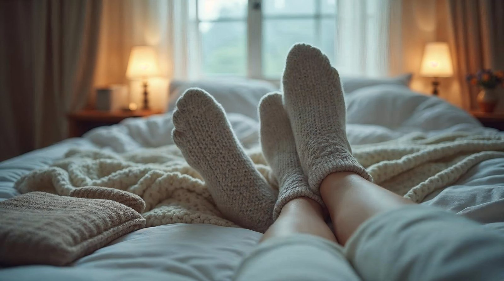

이종호 한의사 감수좋은꿈참사랑한의원 대표원장 (한의사 면허번호 19769)발행 2026-11-22 · 수정 2026-11-25
이 글의 차례
- 오늘 하루는 끝났습니다
- 잘 자려고 하지 않으셔도 됩니다
- 숨을 따라가 보세요
- 몸을 발끝부터 내려놓아 보세요
- 생각이 자꾸 떠오르는 밤이라면
- 소리와 불빛이 신경 쓰이는 밤이라면
- 몸이 차거나 속이 더부룩한 밤이라면
- 새벽에 깨어 이 글을 다시 펼치셨다면
- 내일이 중요한 날인 밤이라면
- 그래도 잠이 오지 않는다면
- 잠을 설친 다음 날 아침에는
- 왜 애쓸수록 잠이 멀어질까요
- 자주 하는 오해
- 진료실에서 자주 만나는 밤들
- 이런 밤들도 있습니다
- 곁에 있는 가족이 해 줄 수 있는 것
- 낮에 해 둘 수 있는 것
- 잠을 하루 전체의 리듬으로 봅니다
- 언제까지 지켜보고, 언제 상담하면 좋을까요
- 처음 오시면 이렇게 진료합니다
- 이렇게 기록해 오시면 상담이 쉬워집니다
- 이럴 땐 바로 진료를 받으세요
- 이런 증상은 먼저 확인이 필요합니다
- 다시, 오늘 밤
- 함께 읽으면 좋은 글
이 글은 자기 전에 천천히 읽는 글입니다. 불을 조금 낮추고, 편한 자세로 누우셔도 좋습니다. 읽다가 졸리면 끝까지 읽지 않으셔도 됩니다. 그대로 주무시면 그걸로 이 글은 할 일을 다 한 것입니다. 아래쪽에는 잠 못 드는 밤이 길어질 때 살펴볼 점을 따로 정리해 두었으니, 그 부분은 낮에 읽으셔도 좋습니다.
오늘 하루는 끝났습니다
아침에 눈을 떠서 지금까지, 참 많은 일이 있었을 겁니다. 출근길에 서두르셨을 수도 있고, 누군가의 밥을 챙기셨을 수도 있고, 마음에 걸리는 말을 듣고 하루 종일 곱씹으셨을 수도 있습니다. 어떤 하루였든, 그 하루는 이제 끝났습니다.
오늘 다 못 한 일은 내일의 몫으로 남겨 두어도 됩니다. 답장하지 못한 메시지도, 정리하지 못한 서류도, 하지 못한 말도 밤사이 어디로 도망가지 않습니다. 지금 이 시간만큼은 아무것도 해결하지 않으셔도 됩니다. 오늘 하루 애쓰셨습니다. 진심으로 그렇게 말씀드리고 싶습니다. 잘한 일만 떠올리지 않아도 됩니다.
아쉬운 일이 있었다면 그것도 오늘의 일부였을 뿐, 지금의 당신을 다 말해 주지는 않습니다.
잘 자려고 하지 않으셔도 됩니다
진료실에서 이런 말씀을 자주 듣습니다. "누우면 오늘은 꼭 자야지, 하는데 그럴수록 눈이 말똥말똥해져요." 저는 그 마음을 압니다. 내일 할 일이 많을수록, 어젯밤을 설쳤을수록 오늘은 잘 자야 한다는 마음이 커지지요. 그런데 잠은 이상하게도 붙잡으려 할수록 한 걸음씩 물러납니다.
잠은 노력해서 얻는 것이라기보다 몸이 스스로 찾아오는 것에 가깝습니다. 손님을 기다릴 때처럼, 문을 열어 두고 방을 따뜻하게 해 두면 그다음은 손님의 몫입니다. 오늘은 눈을 감고 그저 누워 있기만 해도 괜찮습니다. 잠이 들지 않아도 눈을 감고 가만히 있는 동안 몸은 하루의 무게를 조금씩 내려놓고 있습니다.
숨을 따라가 보세요
이제 숨을 한번 느껴 보세요. 바꾸려고 하지 말고, 지금 어떻게 쉬고 있는지 그냥 지켜보는 것부터 시작합니다. 가슴이 오르내리는지, 배가 오르내리는지, 숨이 짧은지 긴지 가만히 느껴 봅니다.
조금 익숙해지면 코로 천천히 들이쉬며 속으로 넷을 셉니다. 하나, 둘, 셋, 넷. 그리고 입으로 길게 내쉬며 여섯을 셉니다. 하나, 둘, 셋, 넷, 다섯, 여섯. 내쉬는 숨이 들이쉬는 숨보다 조금 길면 됩니다. 숫자가 꼭 맞지 않아도 괜찮습니다.
숨을 내쉴 때마다 어깨가 조금 내려가는 것을 느껴 보세요. 꽉 다물고 있던 턱이 살짝 풀리고, 이마에 남아 있던 힘이 조금씩 빠져나갑니다. 생각이 떠오르면 "아, 생각이 떠올랐네" 하고 알아차린 뒤 다시 숨으로 돌아오면 됩니다. 생각이 떠오르는 건 잘못하고 있다는 뜻이 아닙니다. 수십 번 떠올라도, 수십 번 다시 돌아오면 됩니다.
어지럽거나 숨이 답답하면 언제든 멈추고 편하게 쉬세요. 이건 숙제가 아닙니다.
몸을 발끝부터 내려놓아 보세요
이번에는 몸 구석구석에 잠깐씩 마음을 보내 봅니다. 먼저 발바닥과 발뒤꿈치가 이불에 닿아 있는 느낌을 가만히 느껴 봅니다. 하루 종일 나를 싣고 다닌 발입니다. 고생했다고 한마디 건네도 좋습니다.
종아리와 무릎, 허벅지가 바닥 쪽으로 조금씩 무거워진다고 생각해 봅니다. 허리와 등이 매트리스에 기대어 있는 것을 느끼고, 배가 숨에 따라 오르내리는 것을 지켜봅니다. 손가락을 살짝 오므렸다가 천천히 펴 봅니다. 손바닥이 따뜻해지는 느낌이 들 수도 있습니다. 어깨가 귀 쪽으로 올라가 있지는 않은지 살피고, 올라가 있다면 숨을 내쉬며 툭 내려놓습니다.
마지막으로 눈가와 미간, 그리고 입천장에 붙어 있던 혀끝에 남은 힘을 놓아 봅니다.
순서를 잊어도 괜찮습니다. 어디까지 했는지 모르겠다면, 그 사이 몸은 이미 조금 내려앉아 있는 것입니다.
생각이 자꾸 떠오르는 밤이라면
그래도 머릿속이 시끄러운 밤이 있습니다. 내일 회의, 아이 문제, 부모님 건강, 갚아야 할 돈, 그때 왜 그렇게 말했을까 하는 후회까지. 누워 있으면 이런 생각들이 줄지어 찾아옵니다.
그럴 때는 머리맡에 둔 작은 종이와 연필을 꺼내, 마음에 걸리는 일을 한 줄씩 적어 두셔도 됩니다. 해결책을 쓰지 않아도 됩니다. "내일 거래처에 전화" "엄마 병원 예약 확인" 이렇게 이름표만 붙여 두는 겁니다. 적어 둔 일은 내일 아침의 내가 다시 펼쳐 볼 것입니다. 지금은 종이에 맡겨 두고 숨으로 돌아오면 됩니다.
화면 불빛은 눈과 머리를 깨우기 쉬우니, 이 시간에는 휴대폰 메모보다 종이를 권합니다. 불도 작은 수면등 하나면 충분합니다.
소리와 불빛이 신경 쓰이는 밤이라면
어떤 밤에는 마음도 몸도 괜찮은데 바깥이 잠을 깨웁니다. 위층에서 의자 끄는 소리가 나고, 창밖으로 오토바이가 지나가고, 옆에서 자는 가족의 코 고는 소리가 오늘따라 크게 들립니다. 한번 귀가 거기에 가 있으면 다음 소리가 언제 날까 기다리게 되지요. 기다리는 동안 몸은 다시 깨어납니다.
이럴 때는 소리를 이기려 하지 말고, 귀가 붙잡을 다른 소리를 하나 만들어 주세요. 선풍기나 공기청정기의 낮고 고른 소리, 혹은 내 숨소리입니다. 숨을 내쉴 때 콧구멍 끝을 스치는 바람을 느껴 보세요. 바깥 소리가 들려도 "소리가 났네" 하고 알아차린 뒤 다시 내 숨으로 돌아옵니다. 생각이 떠오를 때와 같은 방법입니다.
불빛도 비슷합니다. 커튼 틈으로 가로등이 비치거나, 충전 중인 기기의 작은 불이 깜빡이면 눈을 감아도 은근히 신경이 쓰입니다. 오늘 밤에는 기기를 뒤집어 두거나 수건 한 장으로 가려 두고, 내일 낮에 커튼을 한 번 살펴보세요. 귀마개나 수면 안대가 편한 분도 있고 오히려 답답한 분도 있으니, 써 보시고 편하면 이어 가시면 됩니다.

몸이 차거나 속이 더부룩한 밤이라면
마음이 아니라 몸이 잠을 붙잡는 밤도 있습니다. 이불 속에 들어와도 발끝이 시려 한참을 웅크리고 있거나, 늦게 먹은 저녁이 아직 명치에 얹혀 있는 듯한 밤이지요.
발이 차다면 양말을 한 켤레 신거나 발치에 담요를 한 겹 더 덮어 보세요. 따뜻한 손바닥을 아랫배에 가만히 얹고 숨을 쉬는 것도 좋습니다. 손의 온기가 배로 천천히 스며드는 것을 느끼며, 숨이 그 손을 밀어 올렸다가 내려놓는 것을 지켜봅니다. 속이 더부룩하다면 똑바로 눕기보다 몸을 조금 옆으로 돌려 누워 보세요. 왼쪽이든 오른쪽이든 편한 쪽이면 됩니다.
오늘 밤 이런 불편이 있었다면, 내일 아침 종이에 한 줄 적어 두세요. "발 시림", "속 더부룩". 그 한 줄이 나중에 내 잠을 이해하는 실마리가 되기도 합니다.
새벽에 깨어 이 글을 다시 펼치셨다면
새벽 두 시, 세 시. 다들 잠든 시간에 혼자 깨어 있으면 세상에 나만 남은 것처럼 외롭게 느껴집니다. 그 마음, 저도 압니다. 이 시간에는 작은 걱정도 크게 부풀어 오르기 쉽습니다. 낮이었다면 별것 아니었을 일이 새벽에는 해결할 수 없는 큰일처럼 느껴집니다.
그러니 새벽에 떠오른 생각은 새벽의 크기로만 받아 주세요. 지금 결론을 내리지 않아도 됩니다. 아침 햇빛 아래에서 다시 보면 대개는 조금 작아져 있습니다. 다시 한번 넷에 들이쉬고 여섯에 내쉬어 보세요. 잠이 다시 오지 않아도 괜찮습니다. 눈을 감고 쉬는 이 시간도 몸에게는 쉼입니다.
내일이 중요한 날인 밤이라면
시험, 면접, 이사, 이른 아침 비행기, 가족의 수술 날. 이런 날을 앞둔 밤에는 평소에 잘 자던 분도 쉽게 잠들지 못합니다. 알람을 세 번 확인하고, 가방을 두 번 열어 보고, 누워서도 내일 아침의 순서를 머릿속으로 몇 번이고 되짚습니다. 저도 그런 밤을 여러 번 보냈습니다.
이런 밤에는 "오늘 꼭 자 둬야 내일 잘할 수 있다"는 생각을 조금 바꿔 보셨으면 합니다. 큰일을 앞둔 날 하룻밤 덜 잔 것으로 내일이 결정되지는 않습니다. 오히려 긴장 덕분에 다음 날 낮에는 생각보다 정신이 또렷한 분이 많습니다. 걱정되는 것은 미리 종이에 적어 두세요. "알람 6시 두 개", "신분증 가방 앞주머니", "7시 10분 출발".
확인할 것이 종이에 다 있으면 머리는 그 일을 내려놓아도 됩니다.
그리고 눕기 전에 내일 입을 옷과 들고 갈 가방을 현관 쪽에 꺼내 두세요. 손으로 준비를 마쳐 두면 마음도 한 발 물러섭니다. 그다음은 넷에 들이쉬고 여섯에 내쉬는 숨으로 돌아오면 됩니다. 오늘 밤은 잠이 얕더라도 누워서 눈을 감고 있는 것으로 충분합니다.
큰일을 마친 날 밤에도 잠이 잘 오지 않을 수 있습니다. 긴장이 한꺼번에 풀리면서 오히려 머리가 들뜨는 것이지요. 그날은 잘 버텨 낸 나에게 따뜻한 물 한 잔을 건네고, 오늘 있었던 일을 종이에 몇 줄 적어 내려놓은 뒤 누우셔도 좋습니다. 며칠이 지나면 잠도 대개 평소 자리로 돌아옵니다.
그래도 잠이 오지 않는다면
이렇게 해도 잠이 오지 않는 밤이 있습니다. 그런 밤이 있다는 것을 저도 알고, 그게 당신 탓이 아니라는 것도 압니다. 이십 분쯤 지났는데 여전히 눈이 말똥말똥하다면 잠깐 일어나셔도 됩니다. 거실로 나가 조용한 불빛 아래 앉아 따뜻한 물 한 잔을 마시거나, 재미없는 책 몇 장을 넘기다가 눈꺼풀이 무거워지면 다시 누우면 됩니다.
잠자리를 뒤척이는 장소가 아니라 잠드는 장소로 남겨 두는 작은 방법입니다.
시계는 보지 마세요. 몇 시인지 알면 남은 시간을 셈하게 되고, 그 셈이 또 다른 걱정이 됩니다. 휴대폰을 집어 들어 무언가를 찾아보는 것도 오늘은 미뤄 두세요. 잠이 안 오는 이유를 밤중에 검색하다 보면 걱정만 한 아름 늘어 돌아오기 쉽습니다. 궁금한 것은 낮에, 그리고 필요하다면 진료실에서 함께 이야기하면 됩니다. 아침은 어김없이 옵니다.
조금 덜 잔 날도 우리는 어떻게든 하루를 지나 왔습니다. 오늘 밤 조금 못 자더라도, 내일의 당신은 생각보다 잘 버텨 줄 겁니다.
여기부터는 잠 못 드는 밤이 길어질 때, 낮에 읽어 보시면 좋은 내용입니다.
잠을 설친 다음 날 아침에는
밤새 뒤척인 날 아침에는 알람을 끄고 다시 눈을 감고 싶어집니다. 그 마음이 너무 당연해서, 저도 쉽게 "그래도 일어나세요"라고 말씀드리기가 미안합니다. 그래도 한 가지만 부탁드리고 싶습니다. 늦게 잠들었더라도 평소 일어나는 시각에 몸을 일으켜 보세요. 아침을 늦게 시작하면 그날 밤 잠드는 시각도 함께 밀리기 쉽습니다.
일어나면 먼저 커튼을 열고 창가에 잠시 서 계세요. 흐린 날이라도 바깥 빛은 실내 불빛보다 밝습니다. 미지근한 물 한 잔을 마시고, 가볍게라도 아침을 드십니다. 오늘 할 일 가운데 꼭 해야 하는 것과 미뤄도 되는 것을 나눠, 미뤄도 되는 일은 과감히 내일로 넘기세요. 졸음이 심하면 점심 뒤 이십 분 안쪽으로 눈을 붙이는 것은 괜찮습니다.
다만 운전이나 위험한 기계를 다루는 일은 졸음이 가실 때까지 미뤄 주세요.
그리고 저녁이 되면 "오늘은 일찍 자서 만회해야지" 하기보다, 졸릴 때 평소 시각 즈음에 누우시면 됩니다. 하룻밤 설친 것은 하룻밤으로 끝날 때가 많습니다.
왜 애쓸수록 잠이 멀어질까요
잠이 안 오는 밤이 길어지는 데에는 몇 가지 흐름이 있습니다. 잠을 잘 자야 한다는 마음이 클수록 몸이 긴장해서 오히려 잠이 멀어질 수 있습니다. 시계를 자주 보면 "벌써 몇 시"라는 생각이 또 다른 걱정이 됩니다. 낮의 긴장이 저녁까지 이어지거나, 늦게까지 화면을 보거나, 오후 늦게 마신 카페인이 몸을 깨어 있게 하는 경우도 있습니다.
통증, 밤 소변, 속 불편처럼 몸의 신호가 잠을 깨우기도 합니다.
몇 번 잠을 설치고 나면 잠자리에 드는 것 자체가 긴장되는 일이 되기도 합니다. 침대를 보기만 해도 "오늘도 못 자면 어떡하지" 하는 마음이 먼저 올라오는 것이지요. 이렇게 걱정과 잠자리가 서로 묶여 버리면, 피곤한데도 누우면 정신이 맑아지는 이상한 밤이 이어집니다. 낮에 소파에서는 꾸벅꾸벅 조는데 침대에만 가면 눈이 떠진다는 분들이 이런 경우가 많습니다.
자주 하는 오해
여덟 시간을 꼭 채워야 한다고 여기기 쉽지만, 필요한 잠의 길이는 사람마다 다르고 아침에 어떻게 일어나는지가 더 중요한 단서입니다. 주말에 몰아서 자면 괜찮다고 생각하기 쉽지만, 늦게 일어난 다음 날 밤에는 오히려 잠들기 어려워질 수 있습니다.
잠 못 드는 밤에 술 한 잔이 도움이 된다고 여기는 분도 많은데, 술은 처음엔 졸리게 해도 잠을 얕게 하고 새벽에 깨게 할 수 있습니다. 누워서 잠이 안 오면 시간을 버린다고 생각하기 쉽지만, 눈을 감고 쉬는 동안에도 몸은 긴장을 내려놓고 있습니다. 다만 이십 분 넘게 뒤척이며 괴로워진다면 잠깐 일어나 보셔도 괜찮습니다.
잠을 못 잔 다음 날 일찍 눕는 것도 흔한 선택이지만, 졸리지 않은데 일찍 누우면 뒤척이는 시간만 길어질 수 있어 평소 시각에 눕는 편을 권합니다.
진료실에서 자주 만나는 밤들
특정한 누구의 이야기가 아니라, 진료실에서 여러 번 겹쳐 들은 밤의 모습을 모아 보면 이렇습니다.
퇴근한 뒤에도 업무 메시지를 확인하다가 잠자리에 드는 직장인이 있습니다. 누워서도 휴대폰 알림이 올 때마다 마음이 출렁입니다. 이런 분께는 잠들기 한 시간 전에 휴대폰을 다른 방 충전기에 꽂아 두고, 이 글의 숨 고르기를 해 보는 것부터 시작해 보시길 권합니다.
누우면 공부할 내용이 머릿속을 맴도는 수험생도 있습니다. 오늘 못 끝낸 단원이 자꾸 떠오르고, 내일 계획을 머릿속으로 다시 짜다 보면 새벽이 됩니다. 머리맡 종이에 내일 할 일을 세 줄로 적어 두고 눕는 방법을 함께 써 볼 수 있습니다.
아이를 재우고 나서야 내 시간이 생기는 육아 중인 분도 계십니다. 그 귀한 시간을 놓기 싫어 자정을 넘기다 보면 다음 날이 더 힘들어집니다. 그 마음이 얼마나 간절한지 알기에, 저는 시간을 아예 포기하시라고 말씀드리지 않습니다. 짧은 쉼은 잠자리 밖에서 갖고, 정해 둔 시각이 되면 눕는 연습을 함께 해 보자고 말씀드립니다.
이런 밤들도 있습니다
은퇴한 뒤 낮 시간이 길어진 어르신 가운데에는 점심을 드시고 텔레비전 앞에서 한두 시간씩 주무시다가, 밤에는 열한 시가 넘어도 눈이 말똥말똥하다는 분이 많습니다. 낮잠이 나쁘다는 이야기가 아닙니다.
다만 낮잠을 오후 세 시 전에 이십 분 남짓으로 줄이고, 오전에 동네를 한 바퀴 걸으며 햇빛을 보는 날을 늘려 보시면 밤의 모양이 조금 달라지는지 함께 지켜보자고 말씀드립니다.
밤 근무를 마치고 아침에 집에 돌아와 자야 하는 분도 있습니다. 세상은 막 깨어나는데 나 혼자 잠들어야 하니, 밝은 빛과 바깥 소리가 다 잠을 방해합니다. 퇴근길에 선글라스를 쓰고, 집에 오면 커튼을 치고, 가볍게 먹은 뒤 바로 눕는 순서를 매번 비슷하게 지켜 보시라고 권합니다. 이 글의 숨 고르기는 낮에 누워서 하셔도 똑같이 쓸 수 있습니다.
아픈 가족을 돌보느라 밤에도 귀를 열어 둔 채 잠드는 분도 계십니다. 작은 기척에도 몸이 먼저 일어나니 깊이 잘 틈이 없습니다. 이런 분께 "푹 주무세요"라는 말은 너무 멀게 들린다는 걸 압니다. 그래서 저는 돌봄을 나눌 수 있는 날을 일주일에 하루라도 만들어 보시라고, 그날만큼은 다른 방에서 문을 닫고 주무시라고 말씀드립니다.
짧게 끊어 자는 밤이 이어진다면 그 사정을 진료실에서 꼭 들려주세요.
마음 상하는 일이 있었던 날도 있습니다. 누군가의 말 한마디가 계속 귓가에 남아서, 누우면 그 장면이 다시 재생됩니다. 그 말에 이렇게 대꾸할걸, 하는 생각이 꼬리를 뭅니다. 그런 밤에는 그 장면을 이기려고 하기보다, 머리맡 종이에 "오늘 서운했다" 한 줄만 적어 두세요.
내 마음이 어떤지 이름을 붙여 주는 것만으로도, 마음은 조금 덜 시끄러워지기도 합니다.
곁에 있는 가족이 해 줄 수 있는 것
잠 못 드는 가족을 곁에서 보는 마음도 편치 않습니다. 이럴 때 "그냥 누워 있으면 잠이 와", "생각을 하지 마"라는 말은 위로가 되기보다 부담이 되기 쉽습니다. 생각을 안 하려고 할수록 더 떠오르는 게 사람 마음이니까요.
그보다는 밤에 집 안의 불빛과 소리를 조금 낮춰 주시고, 잠을 설친 다음 날 아침에 "어젯밤 힘들었지" 하고 한마디 건네 주시는 쪽이 도움이 됩니다. 몇 시간 잤는지 캐묻기보다 오늘 하루 무리하지 않도록 일을 조금 나눠 들어 주시는 것도 좋습니다. 잠이 몇 주째 흔들린다면 진료를 받아 보자고 부드럽게 권해 주세요.
낮에 해 둘 수 있는 것
밤의 잠은 아침부터 준비됩니다. 하루의 순서로 말씀드리면 이렇습니다. 아침에 일어나는 시각만큼은 주말에도 평일과 비슷하게 지키고, 일어나면 커튼을 열어 햇빛을 십 분쯤 쬡니다. 커피는 되도록 오후 이른 시간 전에 마치고, 낮잠은 졸리더라도 이십 분 안쪽으로 짧게 잡니다.
저녁 식사는 잠들기 세 시간 전쯤에 마치는 편이 속이 편합니다. 잠자리에 들기 한 시간 전부터는 휴대폰을 멀리 두고 불빛을 낮춥니다. 따뜻한 물로 샤워를 하거나 발을 담그는 것도 좋습니다. 그리고 침실의 시계는 누운 자리에서 보이지 않는 곳으로 돌려 둡니다. 잠자리에 드는 순서를 매일 비슷하게 만들어 두는 것도 도움이 될 수 있습니다.
예를 들어 밤 열 시에 불을 낮추고, 열 시 반에 씻고, 열한 시에 누워 이 글의 숨 고르기를 하는 식입니다. 순서가 같으면 몸이 그 흐름을 기억해 "이제 쉴 시간이구나" 하고 먼저 준비를 시작합니다. 이 가운데 오늘 할 수 있는 것 하나만 골라 시작하셔도 충분합니다.
하루를 시각으로 적어 보면 예를 들어 이렇습니다. 아침 일곱 시에 일어나는 분을 기준으로 적었으니, 본인의 기상 시각에 맞춰 앞뒤로 옮겨 쓰시면 됩니다.
- 07:00 같은 시각에 일어나기. 전날 잠을 설쳤어도 이 시각은 지키기
- 07:10 커튼을 열고 창가에서 십 분쯤 햇빛 보기, 미지근한 물 한 잔
- 07:30 아침은 가볍게라도 먹기
- 12:30 점심 뒤 십 분쯤 걷기
- 14:00 이후 커피·녹차·에너지 음료 줄이기
- 15:00 전 낮잠은 이십 분 안쪽으로만
- 19:00 저녁 식사 마치기, 술은 줄이기
- 21:00 휴대폰은 거실 충전기에, 집 안 불빛 낮추기
- 21:30 따뜻한 물로 씻기
- 22:00 머리맡 종이에 내일 할 일과 걱정을 한 줄씩
- 22:30 누워서 넷에 들이쉬고 여섯에 내쉬기, 발끝부터 몸 내려놓기
이 순서를 하루 만에 다 지키려 하지 마세요. 첫 주에는 일어나는 시각 하나만, 둘째 주에는 저녁 휴대폰 자리 하나를 더하는 식으로 천천히 늘려 가시면 됩니다.
이 글의 방법은 긴장을 푸는 데 도움이 될 수 있는 일반적인 안내이며 치료를 대신하지 않습니다.
잠을 하루 전체의 리듬으로 봅니다
저는 잠 때문에 오신 분께 잠 이야기만 여쭙지 않습니다. 아침에 입맛은 있는지, 점심을 먹고 나면 유난히 처지는지, 저녁이 되면 손발이 차가워지는지, 화장실은 편하게 다니시는지를 함께 듣습니다. 처음엔 "잠 때문에 왔는데 왜 밥 이야기를 하시지?" 하는 표정을 짓는 분도 계십니다.
그런데 이야기를 이어 가다 보면 잠과 그 밖의 일들이 생각보다 촘촘하게 엮여 있다는 걸 함께 알게 됩니다. 저녁을 급하게 먹고 바로 눕는 날이 잦은 분, 하루 종일 긴장한 채 지내다 밤에야 몸이 풀리기 시작하는 분, 몸이 차서 잠드는 데 한참 걸리는 분. 같은 불면이라도 그 사정이 다르면 살펴볼 곳도 달라집니다.
몸이 그동안 그 사람을 위해 애써 온 흔적을 찾아 함께 읽어 가는 일, 저는 진료를 그렇게 생각합니다.
언제까지 지켜보고, 언제 상담하면 좋을까요
잠 못 드는 밤이 며칠 이어지는 것은 누구에게나 있을 수 있어, 일이 주는 일어나는 시각을 일정하게 지키며 지켜보셔도 됩니다. 일주일에 세 번 이상 잠들기 어려운 날이 서너 주 넘게 이어지거나, 낮의 일과 공부가 흔들린다면 진료를 받아 보시길 권합니다.
극단적인 생각이 들거나 며칠째 거의 자지 못해 일상을 이어 가기 어렵다면 기다리지 말고 바로 도움을 요청하세요.
처음 오시면 이렇게 진료합니다
처음 오시면 잠들기까지 보통 얼마나 걸리는지, 밤에 깨는지, 누웠을 때 머릿속에 어떤 생각이 맴도는지, 낮의 기운은 어떤지 먼저 여쭙습니다. 복용 중인 수면제나 다른 약이 있는지도 확인합니다. 서두르지 않습니다. 잠 이야기는 대개 하루 이야기, 마음 이야기와 함께 나오기 때문입니다.
그다음 양손 손목을 차례로 짚어 진맥을 합니다. 맥을 짚는 동안 식사는 어떤지, 속이 더부룩하지는 않은지, 대변은 편한지, 손발이 찬 편인지 아니면 밤에 몸이 달아오르는지 이어서 여쭙습니다. 필요하다고 판단되면 혀와 배를 살피고 원내 장비로 몸 상태를 함께 봅니다.
가져오신 수면 기록이나 생활 메모가 있으면 같이 펼쳐 보고, 지금 잠을 흔드는 것이 긴장인지, 소화나 몸의 온기인지, 생활 리듬인지 설명드린 뒤 침이나 한약 상담 등 치료 방향을 함께 정합니다. 귀가하시기 전에는 오늘 밤 해 볼 한 가지를 함께 정해 드립니다.
다시 오시면 그 사이의 밤이 어땠는지부터 이어서 여쭙습니다. 한 가지라도 해 보셨는지, 해 보니 어땠는지, 어려웠다면 무엇이 어려웠는지요. 그 대답을 듣고 나서 다음 걸음을 같이 정합니다.
잠 못 드는 밤이 길어져 혼자 감당하기 버거우시다면, 상도역 근처 좋은꿈참사랑한의원으로 한번 이야기하러 오셔도 좋습니다. 상도동에서 걸어오시는 분도, 노량진이나 동작구 다른 동네에서 마을버스를 타고 오시는 분도 계십니다. 요즘 밤이 어떤지부터 천천히 듣겠습니다.
이렇게 기록해 오시면 상담이 쉬워집니다
- 일주일 동안 누운 시각과 잠든 것 같은 시각, 낮잠·카페인·술
- 머리맡 종이에 적어 둔 걱정이 주로 어떤 것이었는지
- 이 글의 숨 고르기를 해 본 날과 그때의 느낌, 복용 중인 약
이럴 땐 바로 진료를 받으세요
잠 문제는 대개 시간을 두고 살펴보지만, 기다리지 않으셔야 하는 경우가 있습니다.
- 자다가 가슴이 조이듯 아프거나 숨이 차서 깨고 식은땀이 나는 경우, 한쪽 팔다리에 힘이 빠지거나 말이 어눌해지는 경우에는 가까운 응급실로 가세요.
- 며칠째 거의 자지 않았는데도 피곤하지 않고, 말이 많아지거나 생각이 지나치게 빨라졌다고 가족이 느끼는 경우에는 정신건강의학과 진료를 바로 받으시길 권합니다.
- 마음이 너무 힘들어 스스로를 해치고 싶은 생각이 드는 경우에는 혼자 견디지 마시고 ☎ 109에 바로 연락하세요.
- 새로 먹기 시작한 약이 있고 그 뒤부터 잠이 크게 달라졌다면, 약을 임의로 끊지 마시고 처방한 의사나 약사에게 먼저 물어보세요.
- 자다가 숨이 막혀 깨는 일이 잦거나, 옆에서 숨이 멎는 것 같다는 말을 들었다면 수면 검사가 가능한 곳에서 먼저 확인받으시길 권합니다.
이런 증상은 먼저 확인이 필요합니다
우울감이 깊거나 극단적인 생각이 드는 경우(☎ 109), 코골이와 함께 자다가 숨이 멎는 것 같다는 말을 들은 경우, 낮에 참을 수 없이 졸린 경우에는 먼저 해당 진료를 받으시길 권합니다. 복용 중인 수면제나 신경안정제는 처방한 의사와 상의 없이 줄이거나 끊지 않습니다.
다시, 오늘 밤
낮에 이 글을 읽으셨다면, 오늘 밤 잠자리에서 위쪽의 숨 고르기만 한 번 떠올려 주세요. 넷에 들이쉬고, 여섯에 내쉬고. 어깨를 내려놓고, 턱을 풀고.
잠은 오늘 밤 오지 않으면 내일 밤에 옵니다. 당신이 잘못해서 잠이 멀어진 것이 아닙니다. 몸은 늘 당신을 쉬게 하려고 애쓰고 있습니다. 그러니 오늘 밤은 잘 자려고 애쓰지 마시고, 그저 편히 누워 계세요. 안녕히 주무세요.
함께 읽으면 좋은 글
- 자기 전 30분은 어떻게 보내면 좋을까요?
- 밤에 자꾸 시계를 보게 될 때는 어떻게 하나요?
- 걱정이 많아서 잠이 안 올 때는 어떻게 살피나요?
- 새벽 3시에 깼을 때는 지금 무엇을 하면 되나요?
- 오랜 불면 뒤 침대에 누우면 오히려 긴장될 때는 어떻게 하나요?

먼저 확인이 필요한 신호
- 우울감이 깊거나 극단적인 생각이 드는 경우(109), 코골이와 함께 자다가 숨이 멎…
- 복용 중인 수면제나 신경안정제는 처방한 의사와 상의 없이 줄이거나 끊지 않습니다.
오늘 하루는 끝났습니다
- 아침에 눈을 떠서 지금까지, 참 많은 일이 있었을 겁니다.
- 출근길에 서두르셨을 수도 있고, 누군가의 밥을 챙기셨을 수도 있고, 마음에 걸리는…
잘 자려고 하지 않으셔도 됩니다
- 진료실에서 이런 말씀을 자주 듣습니다.
- "누우면 오늘은 꼭 자야지, 하는데 그럴수록 눈이 말똥말똥해져요." 저는 그 마음을…
숨을 따라가 보세요
- 이제 숨을 한번 느껴 보세요.
- 바꾸려고 하지 말고, 지금 어떻게 쉬고 있는지 그냥 지켜보는 것부터 시작합니다.
자주 묻는 질문
이 글을 읽으면 잠이 오나요?
결과를 약속하지 않습니다. 긴장을 푸는 데 도움이 될 수 있는 일반적인 안내입니다.
숨 고르기는 매일 해도 되나요?
네, 부담 없이 하셔도 됩니다. 어지럽거나 불편하면 멈추고 편하게 숨 쉬세요.
오래 잠을 못 자면 어떻게 하나요?
몇 주 넘게 이어지거나 낮의 생활이 어려우면 진료를 받아 보세요. 우울감이 깊다면 정신건강의학과 진료를 먼저 권합니다.
읽다가 오히려 잠이 깨면 어떻게 하나요?
괜찮습니다. 글은 덮어 두고 조용한 불빛 아래 잠시 앉아 있다가, 졸음이 오면 다시 누우세요.
자기 전에 휴대폰으로 이 글을 읽어도 괜찮을까요?
화면 밝기를 가장 낮추고 짧게 읽은 뒤 휴대폰은 손이 닿지 않는 곳에 두세요. 낮에 미리 읽어 두고 밤에는 숨 고르기만 떠올리셔도 됩니다.
수면제를 먹고 있는데 숨 고르기를 함께 해도 되나요?
숨 고르기는 약과 함께 해 보셔도 되는 일반적인 방법입니다. 다만 수면제의 양이나 복용 여부는 처방한 의사와 상의 없이 바꾸지 마세요.
넷에 들이쉬고 여섯에 내쉬는 게 오히려 답답해요.
숫자는 맞추지 않으셔도 됩니다. 셋에 들이쉬고 넷에 내쉬거나, 숫자 없이 내쉬는 숨만 조금 길게 하셔도 충분합니다. 답답하면 멈추고 편하게 쉬세요.
한의원에서는 잠 문제를 어떻게 살피나요?
잠들기까지 걸리는 시간, 밤에 깨는 모양, 낮의 기운을 여쭙고 모든 분께 양손 맥을 짚습니다. 소화·대변·몸의 온기·마음의 긴장을 함께 들은 뒤 생활에서 해 볼 것과 진료 방향을 같이 정합니다.
좋은꿈참사랑한의원은 재진 때 지난번 이야기부터 이어서 여쭙니다. 진료시간과 예약은 오시는 길에서 확인하세요.
어디서 상담받을 수 있나요?
좋은꿈참사랑한의원은 서울 동작구 만양로2길 2 신성빌딩 3층·5층(서울 동작구 상도동, 7호선 상도역 3번 출구 근처)에 있습니다. 한의사 3명(이종호 대표원장, 조영기 수석진료원장, 정원영 진료원장)이 진료합니다. 진료시간은 평일 09:30~20:00(점심 13:00~14:00), 토·일·공휴일 09:30~15:00이며, 방문 전 전화로 확인을 권합니다. 예약은 네이버 예약, 카카오톡 상담, 전화 02-815-7510로 받습니다.
이 글은 일반적인 건강 정보이며 개인의 진단이나 치료를 대신하지 않습니다. 증상이 있거나 복용 중인 약이 있다면 진료를 통해 확인하세요. 치료 효과는 개인마다 다를 수 있습니다.
작성 기준: 일반적으로 알려져 있는 건강 정보를 참고해 정리했습니다(대표원장 감수). 증상 기록은 1~2주 동안 하루 1회, 비슷한 시간에 적어 오시면 지난 상태와 비교하기 쉽습니다.